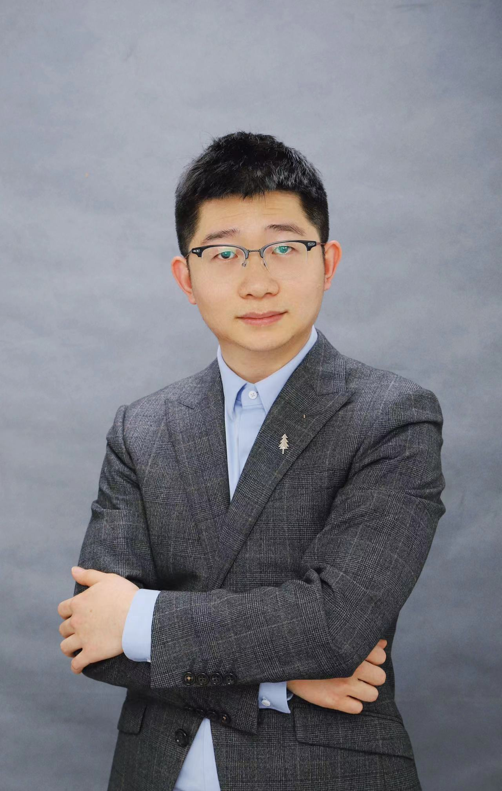

Contact Information
School of Accounting
Southwestern University of Finance and Economics
555 Liutai Avenue, Wenjiang District
Chengdu, P. R. China, 611130
Phone: (86) 028-87092405
Email: zhoucy@swufe.edu.cn
CV
Academic Positions
- Assistant Professor, Southwestern University of Finance and Economics, 2021 to present
- Adjunct Professor, Baruch College, 2017-2021
Education
- Baruch College, Ph.D. in Finance, 2015-2021
Advisors: Lin Peng, Xi Dong
- Southwestern University of Finance and Economics, Financial Engineering, 2011-2015
Working Papers
[1] Flows to International Mutual Funds: Old Money vs. New Money, with Azi Ben-Rephael (Rutgers University), Xi Dong (Baruch College), and Massimo Massa (INSEAD)
- Award/Media: The 2019 PanAgora Asset Management Crowell Prize (First Prize): Pensions & Investments, Yahoo! News, Associated Press, Business Insider
- Conferences: E(uropean)FA 2021, 3rd Future of Financial Information Conference 2021 (a SFS conference), CICF 2021, MFA 2022, 5th News and Finance Conference at Columbia University 2021, AFA 2020 (Ph.D. Poster Session)
- Schools: University of Virginia (McIntire and Darden), Baruch College, City University of New York, Rutgers University
- Industry: PanAgora Asset Management
[2] Does the Media Improve or Hurt Market Efficiency? Evidence from Earnings Announcements, Momentum and 130 Other Anomalies, with Xi Dong (Baruch College) and Joel Peress (INSEAD)
- Schools: Baruch College, City University of New York, SWUFE
[3] AI Democratization, Return Predictability, and Trading Inequality, with Xi Dong (Baruch College) and Yanru Chang (Baruch College)
- Conferences: Conference for Financial Economics and Accounting 2024, “AI Era in Finance” Symposium 2024
- Schools: Monash University, Australian National University